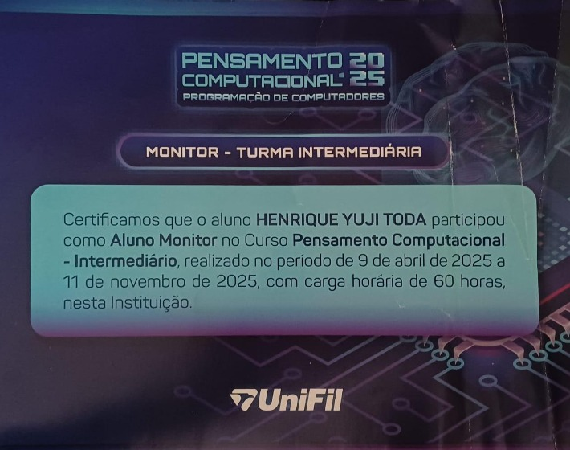
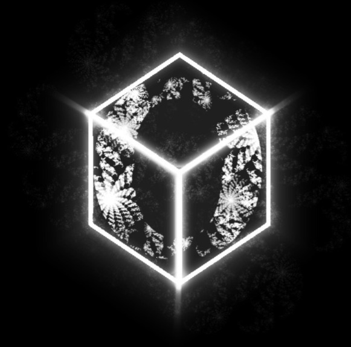
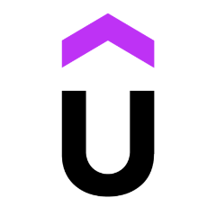

Projetos
Pensamento Computacional
No ano de 2024, participei como aluno do projeto de extensão dos Cursos de Computação da UniFil, Pensamento Computacional, que tem o intuito de ensinar conceitos de tecnologia e programação para alunos do ensino médio de escolas públicas e privadas. No ano seguinte, já como aluno universitário, participei como aluno monitor das turma básica C e na turma intermediária, onde pude evoluir junto dos alunos como estudante de T.I, tendo meu primeiro contato com CSS, JavaScript, Python, SQL e outros conceitos básicos.

Obscura
Atualmente, participo de um grupo de pesquisa e desenvolvimento de jogos, a Obscura, onde atuo como vice-líder das equipes de design e gestão, auxiliando na coordenação e na orientação dos integrantes.
Estamos desenvolvendo um jogo 2D de plataforma e top-down, o Endless Gnome de exploração, aventura e ação, que inclui combate imersivo, explorações de um cenário fantasioso e descobertas da história de fundo ao longo de sua jornada.

Cursos
Para aprimorar meus conhecimentos e evoluir como estudante de T.I, venho realizando cursos pagos de Java e Full-Stack no site Udemy e um curso da Godot Engine no YouTube.
